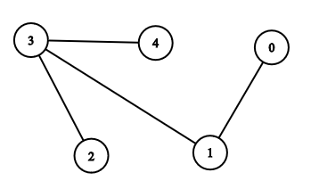

Graph Convolutional Network
Written by : Neetu Murmu
Introduction to GCN
We see many graph-structured data in real-life scenarios such as social media network, fraud detection, and protein-protein interaction data in biological science. But, often times it's a challenging task to solve learning problems on graphs due to their high complexity.
Graph Convolutional Network is a type of neural network that operates on graphs. GCN involves storing states for each node and using an adjacency matrix to propagate those states to the nodes’ neighbors. States for each node could be their features (given or derived using random walk) Given a graph G = (V, E), GCN takes following input :
- An input feature matrix N × F⁰ feature matrix, X, where N is the number of nodes and F⁰ is the number of input features, and
- An N × N matrix representation of the graph structure i.e. adjacency matrix A.
And produces an \(F^{(L)} \)-dimensional output for each node i.e. an \(N * F^{(L)} \) output feature matrix, where L is number of layers.
Each GCN layer can be represented as a function of previous GCN layer and adjacency matrix of the graph:
\[ H^{(l+1)} = f(H^{(l)}, A) \, ,\]
where \(H^{(l)} \) is feature matrix of shape N x \(F^{(l)} \) for layer \(l \) and \(F^{(l)} \), number of features in layer \(l \).
We define \(H^{(0)} = X \).
Each row of feature matrix corresponds to feature representation of a node for that layer.
Propagation Rule
Now that we know what inputs and output of a GCN look like, let's see a simple propagation rule that can be defined as:
\[ f(H^{(l)}, A) = \sigma(A H^{(l)} W^{(l)}) \, ,\]
where \(W^{(l)} \) is a weight matrix for the \(l \)-th GCN layer, and \(\sigma \, \) is a non-linear activation function like ReLU and tanh.
The weight matrix has dimensions \(F^{(l)} * F^{(l+1)} \) ; the 2nd dimension of the weight matrix determines 2nd dimension of \(H^{(l+1)} \) i.e. the number of features at the next layer.
Now, let's understand what this propagation rule is doing:
- When we multiply \(A \) with \(H^{(l)} \), nodes' features in layer \(l \) are updated as the sum of their respective neighbors' features.

Let's consider the graph above, A is it's adjacency matrix, and let X be a simple feature matrix :
In[1] : A = np.array([[0, 1, 0, 0, 0], [1, 0, 0, 1, 0], [0, 0, 0, 1, 0], [0, 1, 1, 0, 1], [0, 0, 0, 1, 0]], dtype=float) X = np.array([[i, 2*i] for i in range(A.shape[0])]) print(X) Out[1] : array([[0, 0], [1, 2], [2, 4], [3, 6], [4, 8]])
In[2] : Y = np.matmul(A, X) print(Y) Out[2] : array([[ 1., 2.], [ 3., 6.], [ 3., 6.], [ 7., 14.], [ 3., 6.]])
e.g. feature for Node 2 is sum of its neighboring nodes i.e. Node 0 and 3, which results in feature representation of Node 2 as [3, 6].
- And, when we multiply above with weights and apply non-linear activation to it, the feautre representations are transformed.
Order of matrix muliplication doesn't matter, since it's associative i.e. [ (AB)C = A(BC) ]
Let's call the first operation 'aggregation' (since neighbors' features are being summed) and second 'transformation' as described in this blog.
As you may have already noticed, there are few problems with the propagation rule defined above :
- In aggregation step, a node's own feature is NOT being included. To fix this, we add self-loop to each node.
For this, we could simply do : \( \hat{A} = A + I\)
In[3] : A = A + I A Out[3] : array([[1., 1., 0., 0., 0.], [1., 1., 0., 1., 0.], [0., 0., 1., 1., 0.], [0., 1., 1., 1., 1.], [0., 0., 0., 1., 1.]]) In[4] : Y = np.matmul(A, X) Y Out[4] : array([[ 1., 2.], [ 4., 8.], [ 5., 10.], [10., 20.], [ 7., 14.]])
Now, for Node 2, it's own features are also added, hence its feature representation becomes [4, 8].
- Second problem is that, typically A is not normalized, i.e. all rows don't sum up to one, therefore when we calculate feature representation of each node, a node with higher degree will have
higher feature value as compared to the node which has lower degree. This can cause vanishing or exploding gradients,
and could also cause problem for gradient descent based algorithms because of scale difference in the features.
To fix this problem, we normalize A as described by [1] such that all rows sum upto one :
\[ \hat{A} = D^{-1} A\] D is diagonal node degree matrix of A, and \( \hat{A} \) is the normalized A.In[4] : A_hat = np.round(matmul(matrix_power(D, -1), A), 3) A_hat Out[4] : array([[0.5 , 0.5 , 0. , 0. , 0. ], [0.333, 0.333, 0. , 0.333, 0. ], [0. , 0. , 0.5 , 0.5 , 0. ], [0. , 0.25 , 0.25 , 0.25 , 0.25 ], [0. , 0. , 0. , 0.5 , 0.5 ]]) In[5] : Y = np.round(matmul(A_hat, X), 3) Y Out[5] : array([[0.5 , 1. ], [1.332, 2.664], [2.5 , 5. ], [2.5 , 5. ], [3.5 , 7. ]])
After introducing the changes as described above, new propagation rule looks as follows:
\[ f(H^{(l)}, A) = \sigma(D^{-1}AH^{(l)} W^{(l)}) \, ,\]
Now, when we multiply features with normalized A i.e. \( \hat{A}\) , we get the feature representation of a node as the mean of features of it's neighboring nodes, as opposed to their direct sum as in the case of un-normalized A.
So far, we have seen two types of propagation rule :
- \(f(A H^{(l)} W^{(l)}) \, \)
- \(f(D^{-1}AH^{(l)} W^{(l)}) \, \)
Now, let's discuss spectral propagation rule, which was proposed in the paper GCN for semi-supervised Node Classification by T. Kipf and Welling [1], where propagation rule is defined as: \[f(H^{(l)}, A) = \sigma\left( \hat{D}^{-\frac{1}{2}}\hat{A}\hat{D}^{-\frac{1}{2}}H^{(l)}W^{(l)}\right) \, ,\]
Here \( \hat{A} = A + I\), where I is the identity matrix and \( \hat{D} \) is the diagonal node degree matrix of \( \hat{A} \).
Difference between this propagation rule and the second propagation rule is in the way they normalize A, and further how it affects the aggregation step.
Now, when we compute aggregate feature representation of the i-th node, we not only take into consideration
the degree of the ith node, but also the degree of the j-th node. Similar to the second propagation rule, the spectral rule normalizes the aggregate
s.t. the aggregate feature representation remains roughly on the same scale as the input features.
However, the spectral rule weighs neighbor in the weighted sum higher if they have a low-degree and lower if they have a high-degree.
This may be useful when low-degree neighbors provide more useful information than high-degree neighbors. [4]
You can refer to this blog for detailed mathematical derivation for how each prapagation rule differs in terms of how they carry out aggregation step.
Semi-Supervised learning
Further in the paper [1], they propose how spectral rule can be used for semi-supervised learning. For semi-supervised learning, we use both label and unlabelled nodes. We can add labels for few examples, and since model is parametrized and hence differentiable, we can backpropagate the error on labeled data.
Conclusion:
In this blog post, we talked about how GCN can be used to learn feature representation of nodes based on their respective neighbors in a graph. Different approaches of GCN (propagation rules) differ in terms of how nodes make use of the information around themselves i.e. from their neighboring nodes. We discussed three propagation rules and limitation associated with some of them. Also, the features learned from GCN layers could further be used for semi-supervised learning such as semi-supervised node classification.
Sources:
- https://arxiv.org/abs/1609.02907
- http://tkipf.github.io/graph-convolutional-networks/
- https://towardsdatascience.com/how-to-do-deep-learning-on-graphs-with-graph-convolutional-networks-7d2250723780
- https://towardsdatascience.com/how-to-do-deep-learning-on-graphs-with-graph-convolutional-networks-62acf5b143d0
- https://medium.com/octavian-ai/how-to-get-started-with-machine-learning-on-graphs-7f0795c83763